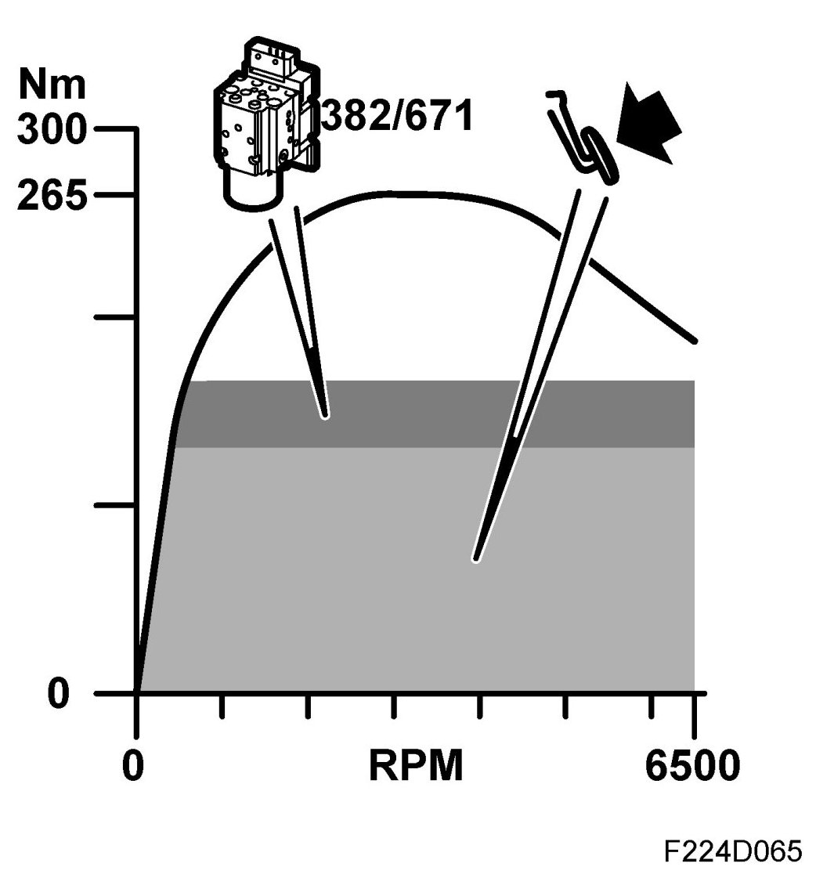
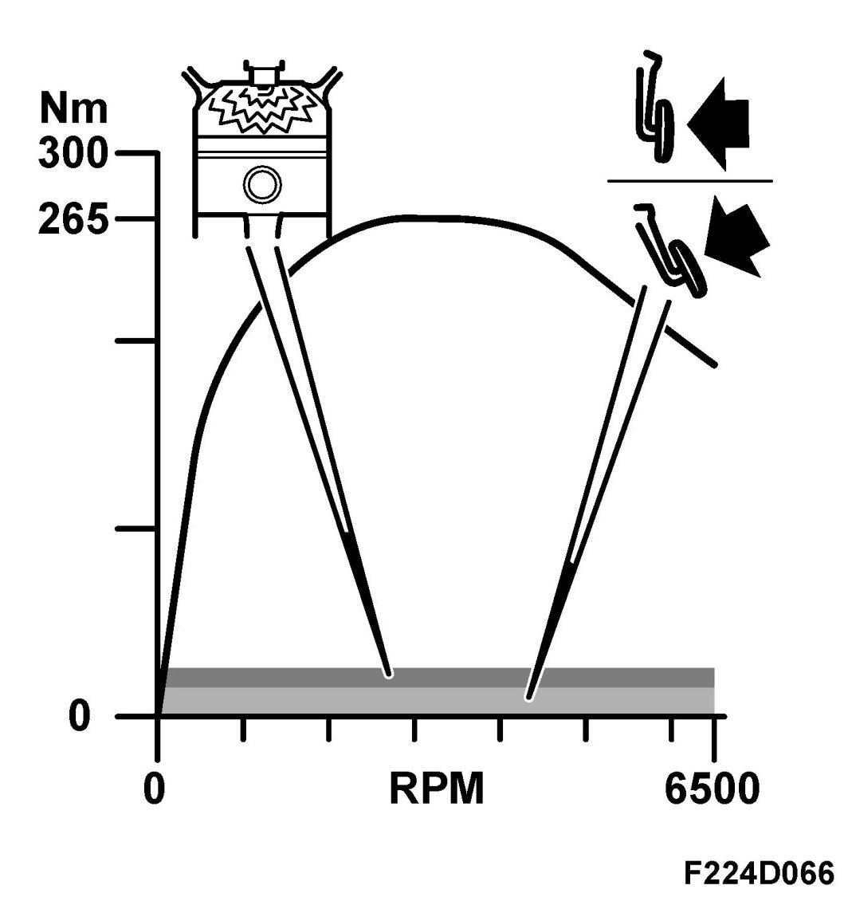
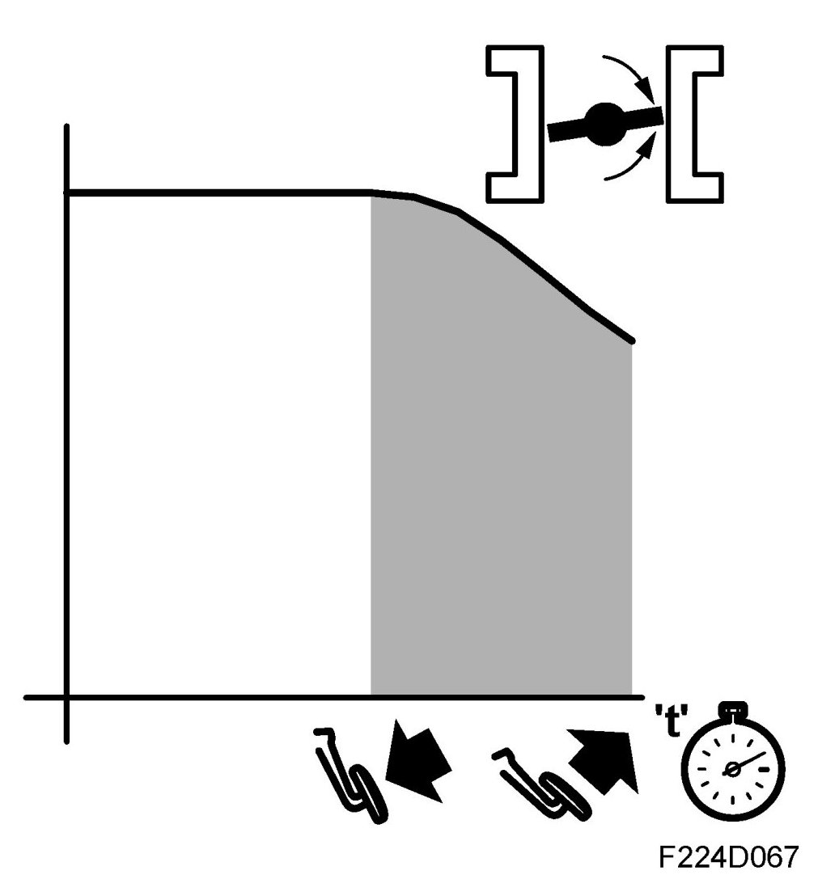

Minimum Engine Torque, 4x
Minimum Engine Torque, 4x
General
The following functions can increase engine torque:
- TCS/ESP increase engine torque (40)
- Minimum load (41)
- Dashpot (42)
Current torque request / limitation can be read on the diagnostic tool. See read values Torque request
TCS/ESP increases engine torque
TCS/ESP torque increase, general
When the drive wheels are rotating too slowly, TCS can request an increase in engine torque so that the wheels can regain their grip and thereby also course stability.

Likewise, ESP can increase engine torque when the car is skidding in order to counter the skid.
Operating principle, torque increase
ECM affects throttle area and ignition timing to increase engine torque during TCS/ESP regulation.
NOTE: ECM can reduce engine torque on request from TCS/ESP but this is covered at another point in the function chain.
Minimum load
In order to obtain stable combustion, the engine load can be allowed to increase in certain cases. Irregular combustion gives a higher content of unburned fuel (HC) in the exhaust gases.

Dashpot
To avoid jarring when suddenly decelerating, the dashpot function will request engine torque for a brief period so that it can then be reduced gradually. This also reduces emissions.

You can compare this function with the throttle damper on older injection or carburettor cars where the throttle movement towards idling was slowed down.